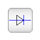
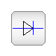

This package contains packages for electrical multiphase components, based on Modelica.Electrical.Analog:
Further development:
| Name | Description |
|---|---|
| Basic | Basic components for electrical multiphase models |
| Examples | Multiphase test examples |
| Ideal | Multiphase components with idealized behaviour |
| Interfaces | Interfaces for electrical multiphase models |
| Sensors | Multiphase potential, voltage and current Sensors |
| Sources | Multiphase voltage and current sources |